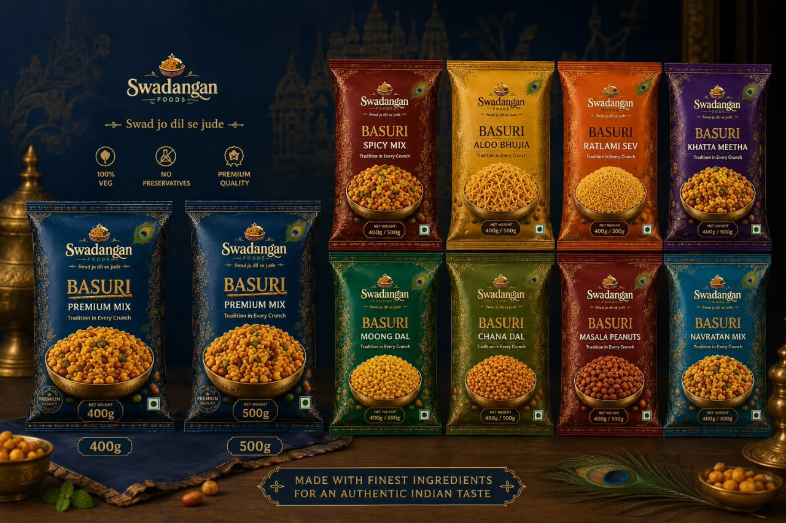

Crafted with the finest farm-selected besan, bold Saurashtra groundnuts, and hand-roasted Indian spices. Experience 9 royal varieties of authentic namkeen packed in nitrogen-flushed 400g & 500g metallized pouches.

Click any farsan variety below to inspect its traditional spice profile, key ingredients, and nutritional facts.